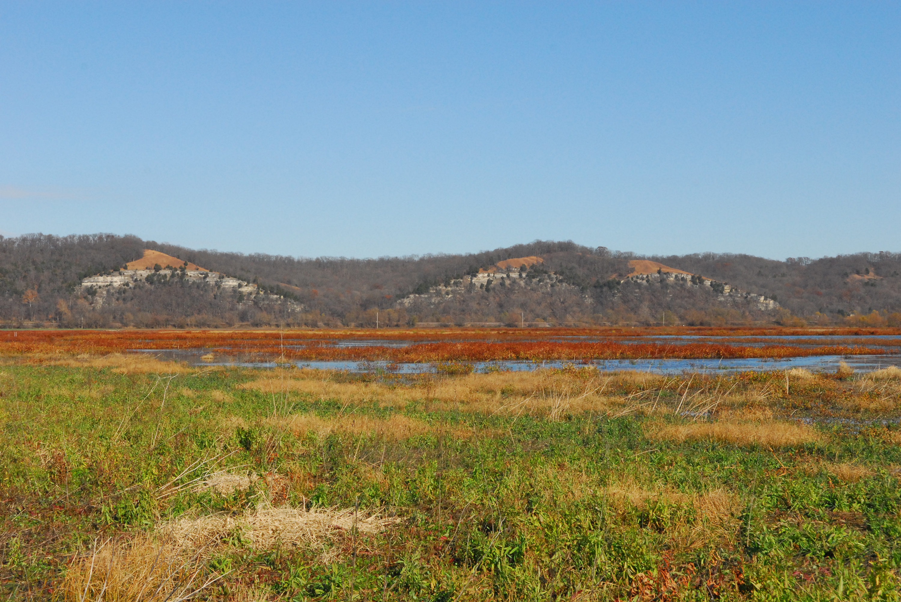

The names of the numerous wetlands, sloughs, and marshes of the Monroe Bottoms have gone through a number of designations—mapping the changing nature of settlement, governance, and attitudes. What is now known as Kidd Lake wetlands was part of the much larger Grand Marais—or “Great Marsh”—that arced across the bottomlands north of Prairie du Rocher. This 800-plus-acre marsh features prominently in early settler descriptions of the bottoms, with the cry of geese and other waterfowl loud enough to inspire settlers to orient their windows away from the water. What was once called the Grand Marais was, by 1875, known as the concatenation of three water bodies—Kidd Lake, Grand Coolie, and Conner Lake. By the early twentieth century most every part of the former Grand Marais had been substantially drained, though the Illinois Department of Natural Resources currently operates a managed wetland for migratory birds along the Mississippi River Flyway. Cattails, lotus, smartweed, cordgrass, river bulrush, false aster, and arrowleaf balsamroot form the wetland plant community that houses the spring frog chorus, the fall migration of wetland birds, and the winter habitat of muskrats.
The present-day designation receives its name from one of the first American settlers in the region—Robert Kidd. A soldier under Colonel George Rogers Clark who had taken part in the capture of Kaskaskia, Kidd returned to the American Bottom in 1781 and settled at the base of the bluff near here.